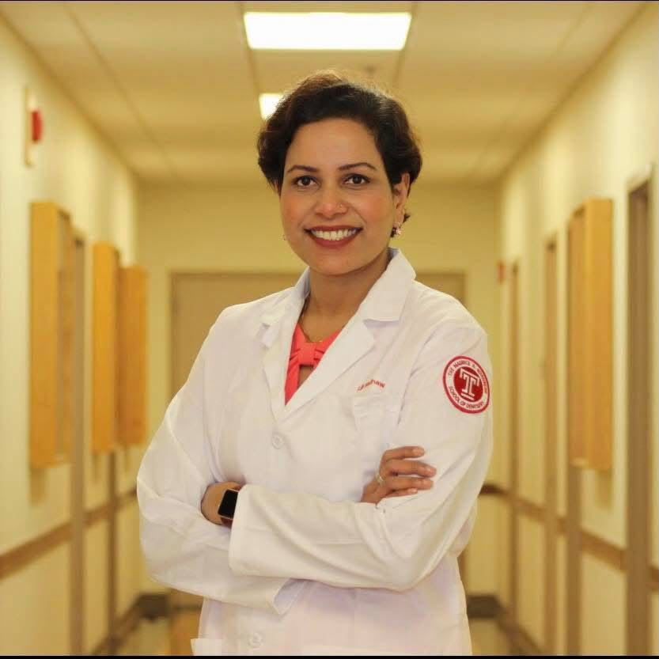
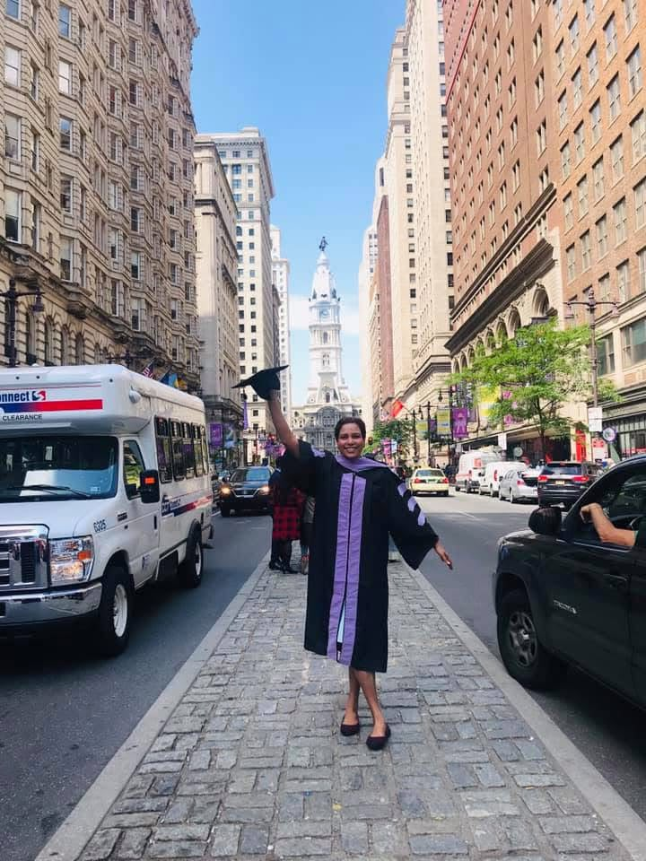
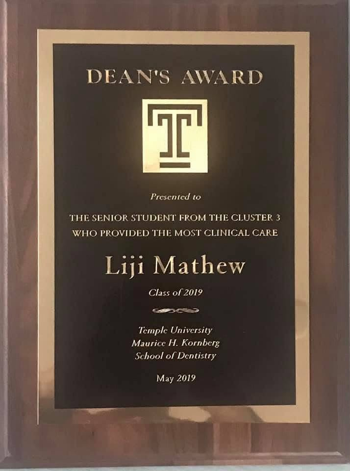

Preparation grounded in practice.
Bench preparation connects technique with the habits of clinical dentistry: careful execution, thoughtful self-assessment and consistent practice.
MY STORY / DR. LIJI MATHEW
From learning and teaching in India to beginning a new chapter in American dentistry. A career built around patient care, continued learning and helping others move forward.
Follow the journey
EXPERIENCE THAT MAKES IT PERSONAL
When Dr. Mathew entered Temple University’s international DMD program, she brought years of patient care, teaching and postgraduate training with her. She was an experienced dentist returning to the classroom, building on that foundation in a new dental system.
Her story connects clinical work with education: learning a skill, applying it thoughtfully, then helping someone else understand it. That thread runs from her early faculty roles in India to her work with dental students and the mentorship behind Train Dentist.
A LIFE IN DENTISTRY
Different places. New responsibilities.
A continuing commitment
to learning and care.
Dr. Mathew completed her BDS at Christian Dental College and Hospital, Ludhiana, including a compulsory internship. She was recognized as the all-round best outgoing student of the class of 2004.
Early clinical and faculty roles took her from Ludhiana to Bangalore. Volunteer dental service at Lehmann’s Christian Missionary Hospital near Dehradun brought her work into underserved communities. She also completed a postgraduate diploma in Clinical Research and Data Management and volunteered in oral-pathology research at the University of Michigan.
At Amrita School of Dentistry, she earned her MDS in Prosthodontics and Crown & Bridge, receiving the university Gold Medal for the highest score in that examination. Her training included fixed and removable prosthodontics, implants and maxillofacial prosthodontics, alongside work with the hospital’s Head and Neck department.
A preceptorship in implant dentistry at UT Health San Antonio expanded her training. In 2014, she became a Fellow of the International Congress of Oral Implantologists, adding another milestone to her continuing education.
Through Temple University’s international DMD program, Dr. Mathew completed her U.S. dental degree. She graduated summa cum laude in 2019 and received a Dean’s Award for providing the most clinical care in her clinic cluster. Her time at Temple also included a student-faculty role supporting dental students.
Practice in Texas has included associate and managing-dentist roles, with experience in restorative care, implant restorations and digital dentistry. She has also assisted in student clinics as part-time faculty at UTHealth Houston’s School of Dentistry. Today, those experiences inform her work as a dentist and mentor.

A MOMENT TO REMEMBER
Graduation marked the completion of her U.S. DMD. The Dean’s Award recognized the patient care behind that milestone: the most clinical care provided by a senior student in Cluster 3.
For someone returning to school with an established dental background, that moment brought earlier training and a new professional chapter together.

TEMPLE UNIVERSITY · MAY 2019Dean’s AwardClinical care · Cluster 3View the award ↗WHERE EXPERIENCE BECOMES GUIDANCE
Train Dentist brings her experience as an internationally trained dentist, clinician and educator into focused admissions preparation.
Bench preparation connects technique with the habits of clinical dentistry: careful execution, thoughtful self-assessment and consistent practice.
Application and interview mentoring helps applicants explain their own training, experience and motivation with clarity and confidence.
Every applicant brings a different background. Dr. Mathew works with dentists in English, Malayalam, Hindi and Punjabi, helping make that conversation more comfortable.
BEYOND THE CLINIC
Dr. Mathew’s experience in front of an audience began well before Train Dentist. Her biography includes organizing dental conferences and serving as a master of ceremonies during her student and postgraduate years.
These photographs capture that other side of her: at ease with a microphone, sharing a smile and connecting with the people around her.
Start a conversation